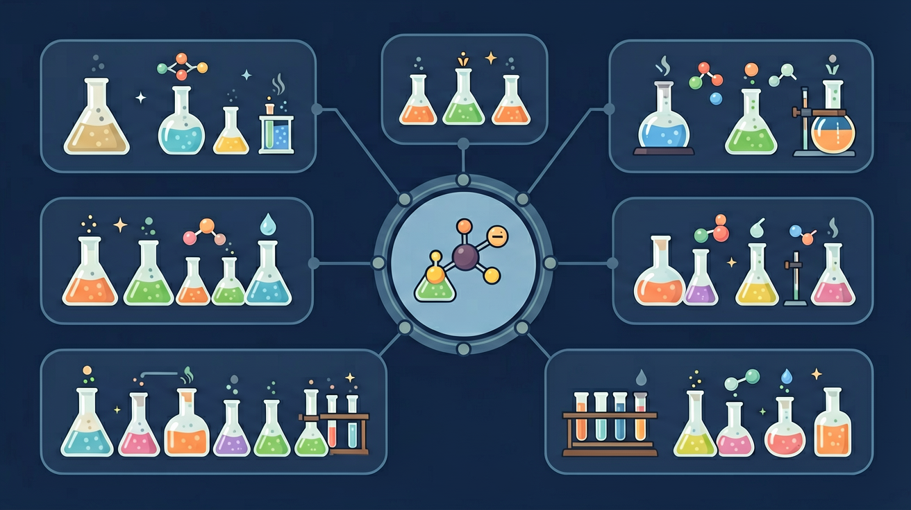

真实情境
厨房里的有机化合物
小华发现厨房里有白醋、料酒、食用油三种液体。妈妈告诉他：白醋含乙酸，料酒含乙醇，食用油含酯类。小华想比较它们的溶解性和与碳酸钠反应的现象，但分不清哪些性质由官能团决定。
已有经验
学生知道醇类可燃烧，乙酸有酸味，酯类有香味
真正卡点
混淆酚羟基与醇羟基的酸性差异，醛基被氧化与羧酸电离的区别
本课任务
根据官能团预测物质性质
醛基的结构可表示为？
小华发现厨房里有白醋、料酒、食用油三种液体。妈妈告诉他：白醋含乙酸，料酒含乙醇，食用油含酯类。小华想比较它们的溶解性和与碳酸钠反应的现象，但分不清哪些性质由官能团决定。
学生知道醇类可燃烧，乙酸有酸味，酯类有香味
混淆酚羟基与醇羟基的酸性差异，醛基被氧化与羧酸电离的区别
根据官能团预测物质性质
官能团是决定有机物特征性质的原子或原子团，如羟基 —OH、羧基 —COOH、醛基 —CHO、碳碳双键等。同类官能团往往表现相似的化学性质。识别官能团是判断反应类型的关键。一个分子可含多个官能团，性质综合体现。
决定有机物特征性质的原子团称为？
为什么换一个官能团，有机物的性质就会大变？
先选一个你关心的问题。后面的例子、提示和 AI 学伴都会围绕这个问题来帮你推进。
选择或输入后，本课会围绕你的问题展开。
理解官能团对有机化合物性质的决定性作用，掌握醇、酚、醛、羧酸、酯的典型化学性质及相互转化关系
乙醛与新制氢氧化铜悬浊液共热产生砖红色沉淀（Cu₂O），证明醛基的还原性，反应需保持碱性环境且加热至沸腾
官能团性质分析四步法：①标出官能团类型 ②列出典型反应类型 ③判断可能的断键位置 ④预测主要产物结构
易混淆酚羟基与醇羟基酸性：酚能使石蕊变红（pH≈5），而乙醇中性（pH=7），因苯环使酚羟基氢更易电离
课堂任务：请用“现象/文本/地图/实验数据 → 关键证据 → 学科解释 → 迁移应用”四步，重写一个关于「官能团：醇酚醛酸酯的性质开关」的新问题。
如果你能解释“为什么换一个官能团，有机物的性质就会大变？”，这节课就真正过关了。
羟基：与钠反应、可被氧化；羧基：酸性、酯化；醛基：可被氧化（银镜反应、与新制氢氧化铜）、可被还原。碳碳双键：加成、氧化（使高锰酸钾褪色）。先识别官能团，再联想其典型反应与鉴别方法。
能发生银镜反应的官能团通常是？
有机物可通过氧化、还原、取代、加成等在官能团间转化，如醇→醛→羧酸的氧化链。掌握转化网络有助于有机推断与合成设计。书写时注意条件（催化剂、温度）与产物官能团变化。
乙醇经催化氧化首先生成？
官能团决定主要性质：醇羟基可取代、消去、氧化；酚羟基有酸性、显色（FeCl₃）；醛基可氧化（银镜、新制 Cu(OH)₂）、还原；羧基有酸性、酯化；酯可水解。同一分子可含多种官能团。
列表：醛→银氨溶液；酚→FeCl₃ 显紫；羧酸→NaHCO₃ 放 CO₂；酯→碱性水解。据此鉴别与推断结构。
常见误区：常见误区是把醇羟基与酚羟基性质等同，或认为所有含氧衍生物都能银镜反应。
能发生银镜反应的官能团是？
本课任务：用分子模型辨认不同官能团的空间位置，整理“醇→醛→酸”氧化链与各官能团特征反应的对照表。
写清自变量、因变量和至少两个保持不变的条件，避免同时改变多个因素后无法归因。
至少记录三组带单位的数据或三个可复查的现象，不用“变大了”“更明显”代替证据。
用本课公式、粒子模型或受力关系解释趋势，并指出结论成立所依赖的模型条件。
换一个参数或真实情境预测结果，再用仿真检验；若不一致，回查变量、单位和边界条件。

识别并写出本节核心定义、公式或分类标准。
把本课标准用于一个实验数据或真实生活场景。
设计一个反例，说明常见错误为什么站不住脚。
醇羟基可与 Na 反应、可氧化、可与羧酸酯化；酚羟基酸性强于醇。
醛基 -CHO 具有还原性，可被氧化为羧基。
羧基 -COOH 显酸性，可酯化；酯基 -COOR 可水解。
记忆锚点：官能团看尾巴：羟基可氧化，醛基可再氧，羧基显酸，酯基能水解。
易错提醒：常见错误：把醇羟基和酚羟基酸性混同。连接环境不同，性质不同。
不要只看结论。动手改变变量后，再用一句话解释画面为什么变了。